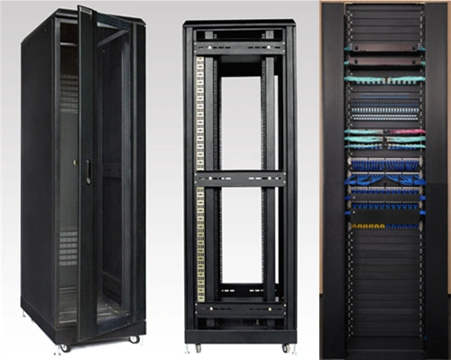
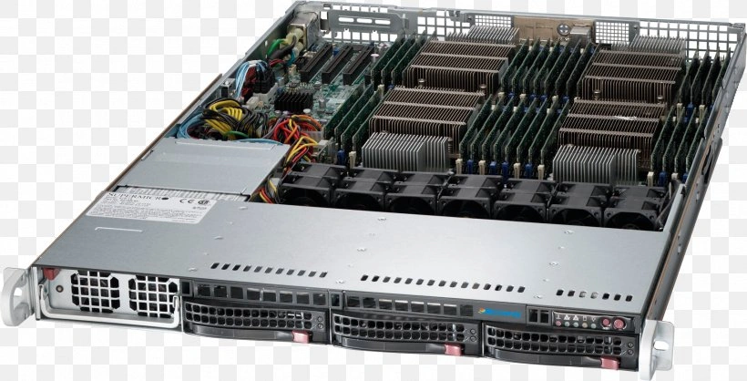

<style>
    code {
        padding: .2rem;
        background: lightgrey;
        border-radius: .25rem;
    }
</style>
<main>
    <header><h1>Як налаштувати сервер</h1></header>

    <section>
        <header>
            <h2>Опис серверу</h2>
        </header>

        <p>Почнімо з того що впевнимось, в розумінні, що собою являє сервер. Сервером можуть називати як фізичну машину так і програму суть якої це приймати і обробляти з'єднання та запити від інших програм (клієнтів). В даному випадку мова піде про фізичні сервери. Фізичний сервер це звичайний комп'ютер який постійно увімкнений і підключений до інтернету. Зовнішній вигляд і особливості компонентів можуть відрізнятися від звичайних користувацьких машин, просто тому що для серверів використовують спеціалізовані компоненти заточені під особливості задач серверних ЕОМ. Для прикладу форм-фактор материнських плат підігнаний під розмір юнітів в server rack (це спеціальні стійки де розміщуються сервери, рисунок 1), також у них може бути значна кількість слотів під ОЗП (RAM), більше одного процесора та додаткові DPU юніти (Рисунок 2). Проте нічого не заважає використовувати звичайний комп'ютер в якості сервера.</p>
        <div style="display: flex; flex-direction: row;">
            <figure>
                
                <figcaption>Рисунок 1. Server rack</figcaption>
            </figure>
            <figure>
                
                <figcaption>Рисунок 2. Сервер</figcaption>
            </figure>
        </div>

        <p>Сервера розміщуються у датацентрах (ДЦ) (Рисунок 3-4), це спеціально спроектовані споруди для розміщення великої кількості серверів. Вони мають посилені системи фізичного захисту, резервні джерела живлення, спеціалізовану систему пожежогасіння розраховану для гасіння електроприладів під час роботи. Ну і звісно інтернет з'єднання з великою пропускною здатністю.</p>

        <div style="display: flex; flex-direction: row;">
            <figure>
                
                <figcaption>Рисунок 3. Дата центр зовні</figcaption>
            </figure>
            <figure>
                
                <figcaption>Рисунок 4. Дата центр всередині</figcaption>
            </figure>
        </div>

        <p>Серверні провайдери яких можна зустріти в інтернеті зазвичай користуються послугами колокації серверів в ДЦ, а не будують власні ДЦ. Ця послуга полягає в тому що вони розміщують свої сервери в ДЦ, за що платять їм орендну плату. І вже здають ці сервери в оренду користувачам. Отримати повний доступ до цілого фізичного серверу можна орендуючи в серверного провайдера виділений сервер (dedicated server, дедік). Проте зазвичай орендують VPS/VDS - Virtual Private/Dedicated Server, це два терміни які виникли одночасно і на даний момент означають одне і те ж. VPS це не цілий фізичний сервер, а віртуальний який запускається як віртуальна машина на потужному фізичному сервері, що дозваляє здавати в оренду невелику частину ресурсів потужного сервера між декількома користувачами. Віртуалки запускаються зазвичай через гіпервізор 1 типу, який запускається на голому залізі замість ОС. Для кінцевого користувача віртуальна машина не буде відрізнятися від фізичного серверу.</p>
    </section>

    <section>
        <header>
            <h2>Налаштування серверу</h2>
        </header>

        <p>Тепер перейдемо до самого налаштування нового серверу. Для роботи з сервером на базі Linux використовується SSH з'єднання. SSH це протокол який дозволяє віддалено отримати доступ до терміналу серверу, стандартний порт SSH - 22. Для роботи SSH необхідно, щоб на сервері був запущений SSH сервер (програма). На всіх звичайних VPS він встановлений за замовчуванням. І після запуску сервера (VPS) ми можемо підключитися до нього використовуючи логін і пароль які ми мали отримати від серверного провайдера. Для цього ми можемо використати SSH клієнт для нашої ОС. У випадку якщо у нас на машині (за якою ми працюємо) стоїть Linux ми можемо просто скористатися стандартним клієнтом написавши в терміналі команду <code>ssh y@x.x.x.x</code>, де <i>y</i> - логін користувача, <i>x.x.x.x</i> - ір адрес серверу. Нас спочатку запитає чи довірємо ми цьому ір, а потім попросить ввести пароль від даного користувача <i>y</i>. Для спрощення роботи ми можемо скопіювати наші SSH ключі на сервер, таким чином ми зможемо підключатися до серверу не вводячи пароль. Такий спосіб є безпечнішим і зручнішим ніж використовувати пароль. Для цього ми можемо скористатися командою <code>ssh-copy-id y@x.x.x.x</code> ця команда скопіює дефолтний ключ користувача на сервер. Звісно якщо ключ існує. зазвичай ключі лежать в директорії <code>/home/username/.ssh</code> у вигляді двух файлів <i>id_ed25519</i> і <i>id_ed25519.pub</i>. В даному випадку назва файла закінчується на ed25519 що вказує на те що цей асиметричний ключ створений алгоритмом ECC і використовує криву x25519, у випадку якогось RSA назва буде відповідно id_rsa, проте раджу використовувати еліптичні криві (ECC) для асиметричних ключів як цей.</p>

        <p>Підключившись до серверу перше, що варто зробити це оновити репозиторії та пакети. Конкретні команди будуть залежати від пакетного менеджеру системи. Я наведу приклад пакетного менеджера Aptitude який використовується в дистрибутивах на основі Debian, в тому числі Ubuntu.
        </p>
        <pre>
<code>apt update # Оновлюємо репозиторії
apt upgrade # Оновлюємо систему</code>
        </pre>

        <p>Оновивши систему ми можемо відразу почати встановлення необхідних пакетів і налаштування ОС, після чого необхідний перезапуск. Можна почати з виділення swap розділу</p>

        <section>
            <header>
                <h3>Swap розділ</h3>
            </header>
            <p>Swap розділ це спеціальний розділ (або файл) на диску, який система може використовувати для того аби скидувати туди частину даних з ОЗП (RAM) аби звільнити оперативну пам'ять для активних задач. ОС сама визначить яка інформація в ОЗП навряд чи буде використана найближчим часом і вигрузить її на диск. Коли програма зробить запит цієї інформація ОС завантажить її знову в ОЗП. Це звісно сповільнить час зчитування вигруженої інформації, проте дозволяє системі витримувати більше навантаження на ОЗП. Оскільки в разі якщо пам'яті не вистачатиме, то система знищить найменш пріоритетні процеси, якими будуть сервіси запущені користувачем :)</p>
            
            <p>Щоб перевірити список підключених swap розділів використовуємо команду <code>swapon --show</code>. Якщо розділів немає то можемо створити новий. Розмір розділу варто визначати враховуючи доступний дисковий простір (<code>df -h .</code>) і очікуване використання ОЗП. Зазвичай swap розділ роблять 1,5 - 2 рази більшим ніж наявний ОЗП. Для прикладу якщо у нас 2 Гб ОЗП, то swap можна зробити 4 Гб. Фактично ніяких правил немає для цього і ви можете діяти в залежності від ваших потреб.</p>

            <ol>
                <li>Щоб створити swap файл спочатку створюємо пустий файл необхідного розміру. Це можна зробити різними способами для прикладу <code>fallocate -l 1G /swapfile</code></li>
                <li>Після цього змінюємо права доступу на файл <code>chmod 600 /swapfile</code></li>
                <li>Форматуємо його як swap розділ <code>mkswap /swapfile</code></li>
                <li>Підключаємо створений розділ до системи як swap розділ <code>swapon /swapfile</code></li>
                <li>Далі прописуємо монтування цього розділу в fstab, аби розділ автоматично монтувався при старті системи <code>echo '/swapfile none swap sw 0 0' | tee -a /etc/fstab</code></li>
            </ol>

            <p>Далі варто налаштувати swappiness, це значення вказує як сильно потрібно скидувати дані на диск. Це значення визначається від 0 до 100. При значенні 0 ОС буде вивантажувати дані з ОЗП лише у випадку крайньої необхідності, а при значені 100 ОС буде намагатися скидувати якомога більше інформації в swap розділ, тримаючи ОЗП вільним. Для серверів це значення варто наближати до 0. Зазвичай 10 достатньо. Перевірити поточне значення можна командою <code>cat /proc/sys/vm/swappiness</code>. а встановити нове значення - <code>sysctl vm.swappiness=10</code>. Остання команда буде працювати лише до перезапуску, щоб зробити зміни постійними варто змінити значення <code>vm.swappiness</code> у файлі <code>/etc/sysctl.conf</code></p>
        </section>

        <section>
            <header>
                <h3>Fail2Ban</h3>
            </header>

            <p>Fail2Ban - це сервіс який перевіряє невдалі спроби авторизації в різних сервісах (в даному випадку нас цікавить лише SSH) і блокує клієнтів при декількох невдалих спробах. Детальні налаштування можна <a href="https://www.digitalocean.com/community/tutorials/how-to-protect-ssh-with-fail2ban-on-debian-11" target="_blank">дізнатися окремо</a>, а для встановлення достатньо виконати команду <code>apt install fail2ban</code></p>
        </section>

        <section>
            <header>
                <h3>UFW</h3>
            </header>

            <p>UFW - це дофлтний інтерфейс в Ubuntu для налаштування iptables (в даному випадку ми будемо використовувати це в ролі Firewall-у), налаштування останнього куди складніше ніж ufw, тому немає сенсу морочитись з ним. Перш за все необхідно заблокувати весь вхідний трафік і дозволяти його лише по мірі настання необхідності.</p>

            <ol>
                <li>Блокуємо весь вхідний трафік <code>ufw default deny incoming</code></li>
                <li>Дозволяємо вхідний трафік для SSH на порт 22 <code>ufw allow 22</code></li>
                <li>Вмикаємо UFW <code>ufw enable</code></li>
            </ol>

            <p>Цього достатньо для початку. Детальніше про налаштування UFW можна <a href="https://www.digitalocean.com/community/tutorials/how-to-set-up-a-firewall-with-ufw-on-ubuntu" target="_blank">прочитати тут</a></p>
        </section>
    </section>

    <p>Тепер можна ребутнути сервер <code>reboot</code> і перейти до подальшого налаштування</p>

    <section>
        <header>
            <h3>Створення корисутвача</h3>
        </header>

        <p>Всі попередні дії ми мали виконувати через користувача root який є головним користувачем системи. Якісь дії окрім базового налаштування системи не варто виконувати з під цього користувача, оскільки це може викликати вразливості системи, а в невмілих руках і накрити всю систему, оскільки цей користувач має повний доступ до всього. Тому для запуску сервісів варто створювати нового користувача. Скільки їх створювати і як розділяти залишається на розсуд адміна. Можна створити по користувачу для кожного розробника, або для кожного клієнта. Можгна поділити користувачів по організаціям або по проектам. Все залежить від того яким чином ви збираєтесь використовувати сервер.</p>

        <p>Для створення нового користувача виконуємо команду <code>adduser -m XXX</code>, де <code>ХХХ</code> це ім'я користувача (логін), прапорець <code>-m</code> вказує, що для даного користувача необхідно створити домашню директорію (по стандарту вона буде знаходитись в <code>/home/XXX</code>). Після створення користувача ми можемо встановити (або змінити) для нього пароль виконавши команду <code>passwd XXX</code>.</p>

        <p>Тепер ви відкрити сесію від імені цього корисутвача <code>su XXX</code> або під'єднатися по SSH використовуючи новий логін та пароль. В даному випадку ви не зможете використати скопійовані SSH ключі для підключення в якості нового користувача, оскільки ключі ви копіювали для користувача root (і лежать вони в /root/.ssh), якщо ви хочете використоувати ключі для підключення в якості новоствореного корисутвача ви можете скопіювати ключі (навіть ті самі) вказавши нового користувача <code>ssh-copy-id XXX@y.y.y.y</code>, де <code>XXX</code> - ім'я користувача і <code>y.y.y.y</code> - ip адрес серверу. Для підключення по SSH від імені нового користувача достатньо виконати команду <code>ssh XXX@y.y.y.y</code></p>
    </section>
</main>